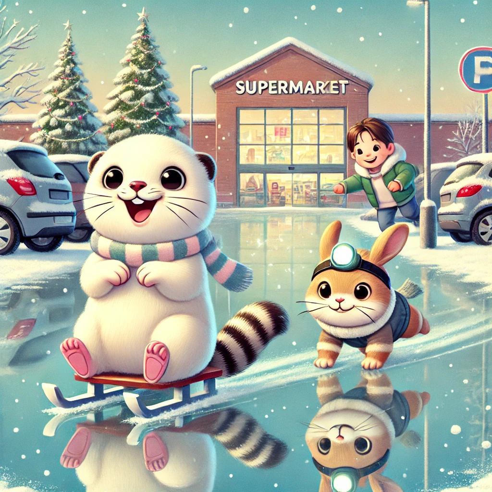
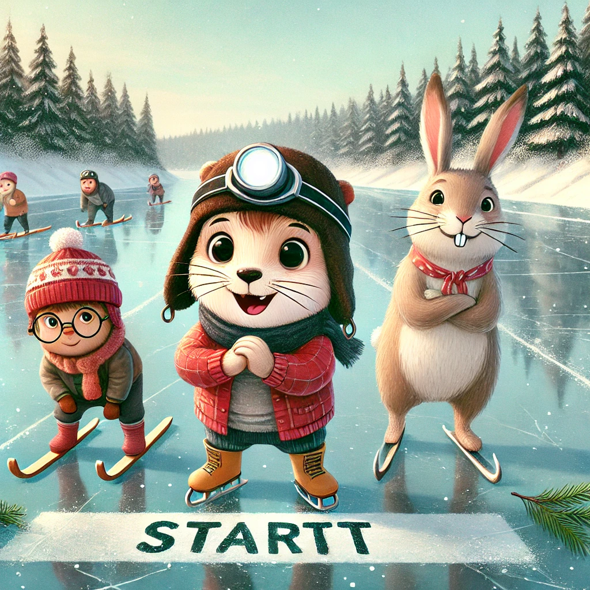
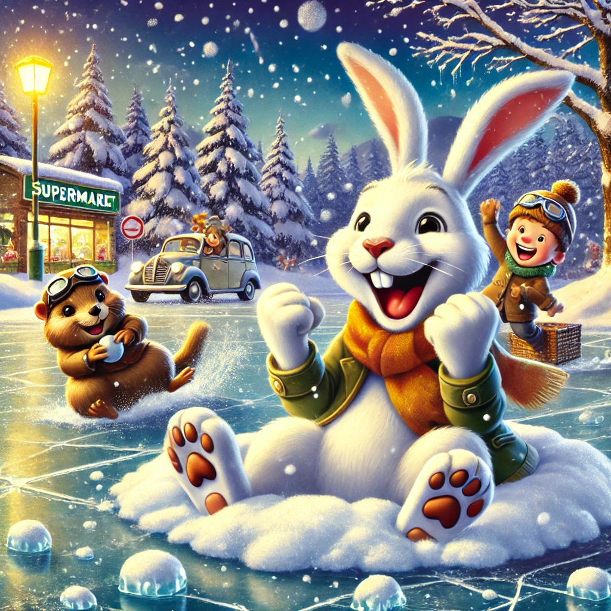

Es war einmal ein Wiesel namens Winnie, das oben auf dem Knabbereienregal eines Supermarkts in Leknes auf den Lofoten wohnte. Eines Tages wachten sie Freunde an einem besonders kalten Tag auf. Am Tag davor hatte die Sonne geschienen und den Schnee auf dem Parkplatz geschmolzen. Über Nacht war dieser geschmolzene Schnee zu einer spiegelglatten Oberfläche gefroren und glänzte verführerisch.
Biep war es dieses Mal, der voller Freude richtig Parkplatz losstob und laut rief: "Hurra, eine Eisbahn! Lasst uns Schlittschuhe laufen!" Winnie hastete hinterher und Herr Hase folgte zögerlich.
Ohne nachzudenken raste Winnie zur Tür hinaus und whoops, landete sie auf ihrem Wieselpopo. Sie schlitterte über das Eis und lachte vergnügt. Biep stürmte ihr nach und hatte Mühe auf den Beinen zu bleiben. Herr Hase wagte sich nur sehr langsam mit einem Pfötchen vor dem anderen vorwärts. Die drei nahmen einander an der Hand und übten ein wenig: Kurven, schnell, langsam, und nach einer Weile sogar Pirouetten.
Die drei wurden mutiger und planten ein Eisrennen: sie steckten mit Tannenzweigen den Startpunkt und die Ziellinie ab und gingen in Position. Winnie zählte bis drei und sie stürmten los. Winnie ging in Führung, fiel aber bald zurück, weil sie das Rennen nicht gewöhnt war. Biep nutzte das Eis aus und glitt mehr als er rannte. Sogar zu seiner eigenen Überraschung überholte Herr Hase am Ende beide und raste mit einer Mordsgeschwindigkeit ins Ziel.
Das Problem war nur, dass er nie von einer solchen Geschwindigkeit abgebremst hatte und so musste er am Ende des Parkplatzes springen und landete in einem weichen Schneehaufen. Er tauchte wieder auf, spukte etwas Schnee aus und rief stolz: "Gewonnen!!" Winnie und Biep sprangen hinterher, um ihn mit einer Schneeballschlacht zu feiern.
